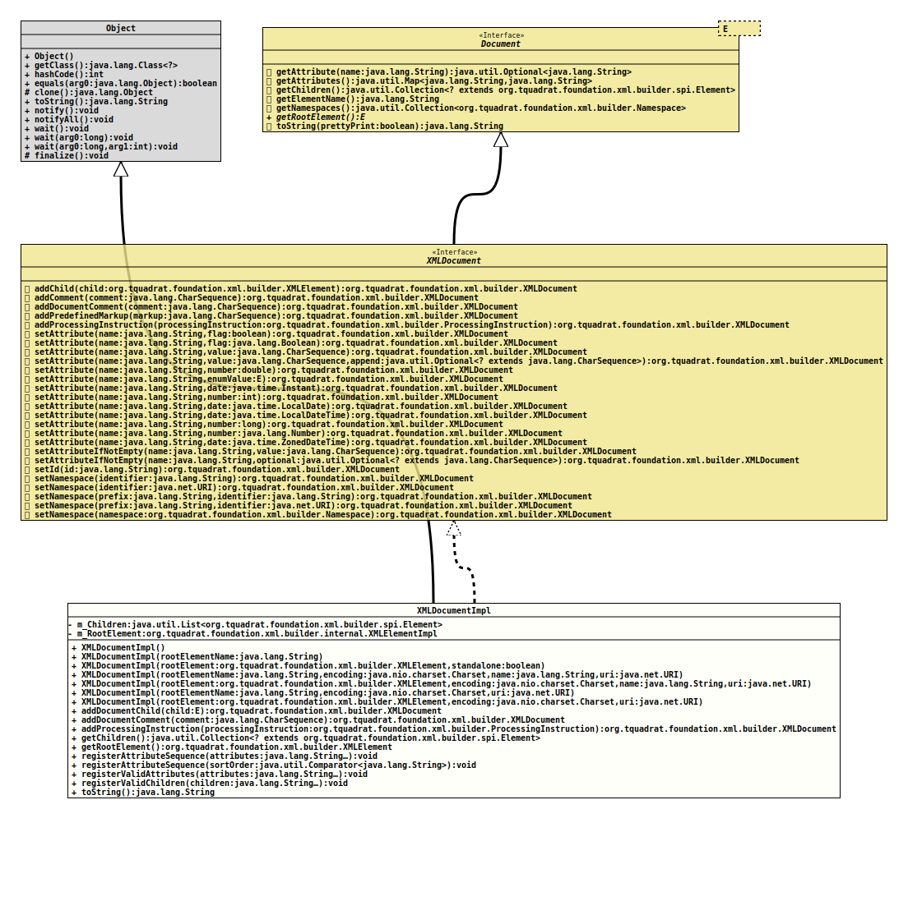

Module org.tquadrat.foundation.xml
Class XMLDocumentImpl
java.lang.Object
org.tquadrat.foundation.xml.builder.internal.XMLDocumentImpl
- All Implemented Interfaces:
Document<XMLElement>,XMLDocument
@ClassVersion(sourceVersion="$Id: XMLDocumentImpl.java 1071 2023-09-30 01:49:32Z tquadrat $")
@API(status=INTERNAL,
since="0.0.5")
public final class XMLDocumentImpl
extends Object
implements XMLDocument
The implementation for the interface
It allows document comments and processing instructions to be added.
XMLDocument.It allows document comments and processing instructions to be added.
- Author:
- Thomas Thrien (thomas.thrien@tquadrat.org)
- Version:
- $Id: XMLDocumentImpl.java 1071 2023-09-30 01:49:32Z tquadrat $
- Since:
- 0.0.5
- UML Diagram
-

UML Diagram for "org.tquadrat.foundation.xml.builder.internal.XMLDocumentImpl"
{kind=link}
-
Field Summary
FieldsModifier and TypeFieldDescriptionThe child elements for this document.private final XMLElementImplThe root element for this document. -
Constructor Summary
ConstructorsConstructorDescriptionCreates a newXMLDocumentImplinstance.
The resulting document will do not have an explicit doc type, the root element will be<root>.XMLDocumentImpl(String rootElementName) Creates a newXMLDocumentImplinstance.
The resulting document will do not have an explicit doc type, the encoding is defined as UTF-8.
The given root element name is validated using the method that is provided byXMLBuilderUtils.getElementNameValidator().XMLDocumentImpl(String rootElementName, Charset encoding, String name, URI uri) Creates a newXMLDocumentImplinstance.
The given root element name is validated using the method that is provided byXMLBuilderUtils.getElementNameValidator().XMLDocumentImpl(String rootElementName, Charset encoding, URI uri) Creates a newXMLDocumentImplinstance.
The given element name is validated using the method that is provided byXMLBuilderUtils.getElementNameValidator().XMLDocumentImpl(XMLElement rootElement, boolean standalone) Creates a newXMLDocumentImplinstance.
The resulting document will do not have an explicit doc type, the encoding is defined as UTF-8.XMLDocumentImpl(XMLElement rootElement, Charset encoding, String name, URI uri) Creates a newXMLDocumentImplinstance.XMLDocumentImpl(XMLElement rootElement, Charset encoding, URI uri) Creates a newXMLDocumentImplinstance. -
Method Summary
Modifier and TypeMethodDescriptionfinal <E extends Element>
XMLDocumentaddDocumentChild(E child) Adds a child to the document itself, not to the root element.final XMLDocumentaddDocumentComment(CharSequence comment) Adds a comment to the document itself.final XMLDocumentaddProcessingInstruction(ProcessingInstruction processingInstruction) Adds a processing instruction to this document.final Collection<? extends Element> Provides access to the children for this document; the returned collection is not modifiable.
The root element is the last entry in the returned collection.final XMLElementReturn the root element for this document.final voidregisterAttributeSequence(String... attributes) Registers an attribute sequence for the root element of this document; this modifies any sort order that was previously set.
The names for the attributes are not validated; in particular, it is not checked whether an attribute is listed as valid.final voidregisterAttributeSequence(Comparator<String> sortOrder) Registers an attribute sequence for the root element of this document; this modifies any sort order that was previously set.final voidregisterValidAttributes(String... attributes) Registers the valid attributes for the root element of this document.final voidregisterValidChildren(String... children) Registers the element names of valid child elements for this document.final StringtoString()Methods inherited from class java.lang.Object
clone, equals, finalize, getClass, hashCode, notify, notifyAll, wait, wait, waitMethods inherited from interface org.tquadrat.foundation.xml.builder.spi.Document
getAttribute, getAttributes, getElementName, getNamespaces, toStringMethods inherited from interface org.tquadrat.foundation.xml.builder.XMLDocument
addChild, addComment, addPredefinedMarkup, setAttribute, setAttribute, setAttribute, setAttribute, setAttribute, setAttribute, setAttribute, setAttribute, setAttribute, setAttribute, setAttribute, setAttribute, setAttribute, setAttributeIfNotEmpty, setAttributeIfNotEmpty, setId, setNamespace, setNamespace, setNamespace, setNamespace, setNamespace
-
Field Details
-
m_Children
The child elements for this document. -
m_RootElement
The root element for this document.
-
-
Constructor Details
-
XMLDocumentImpl
public XMLDocumentImpl()Creates a newXMLDocumentImplinstance.
The resulting document will do not have an explicit doc type, the root element will be<root>. The encoding is defined as UTF-8.
Basically, this document would have the DTD
.<!ELEMENT root ANY> -
XMLDocumentImpl
Creates a newXMLDocumentImplinstance.
The resulting document will do not have an explicit doc type, the encoding is defined as UTF-8.
The given root element name is validated using the method that is provided byXMLBuilderUtils.getElementNameValidator().- Parameters:
rootElementName- The name of the root element for this document.
-
XMLDocumentImpl
Creates a newXMLDocumentImplinstance.
The resulting document will do not have an explicit doc type, the encoding is defined as UTF-8.- Parameters:
rootElement- The root element for this document.standalone-trueif the XML document is standalone,falseif not.
-
XMLDocumentImpl
Creates a newXMLDocumentImplinstance.
The given root element name is validated using the method that is provided byXMLBuilderUtils.getElementNameValidator().- Parameters:
rootElementName- The name for the root element for this document.encoding- The encoding for the new XML document.name- The name for the DTD.uri- The URI for the DTD.
-
XMLDocumentImpl
Creates a newXMLDocumentImplinstance.- Parameters:
rootElement- The root element for this document.encoding- The encoding for the new XML document.name- The name for the DTD.uri- The URI for the DTD.
-
XMLDocumentImpl
Creates a newXMLDocumentImplinstance.
The given element name is validated using the method that is provided byXMLBuilderUtils.getElementNameValidator().- Parameters:
rootElementName- The name of the root element for this document.encoding- The encoding for the new XML document.uri- The URI for the DTD.
-
XMLDocumentImpl
Creates a newXMLDocumentImplinstance.- Parameters:
rootElement- The root element for this document.encoding- The encoding for the new XML document.uri- The URI for the DTD.
-
-
Method Details
-
addDocumentChild
Adds a child to the document itself, not to the root element.- Type Parameters:
E- The type of the child to add.- Parameters:
child- The element to add.- Returns:
- This instance.
- Throws:
IllegalStateException- The child has already a parent that is not this document.
-
addDocumentComment
Adds a comment to the document itself.- Specified by:
addDocumentCommentin interfaceXMLDocument- Parameters:
comment- The comment to add.- Returns:
- This instance.
- Throws:
IllegalArgumentException- The document does not allow adding comments.
-
addProcessingInstruction
public final XMLDocument addProcessingInstruction(ProcessingInstruction processingInstruction) throws IllegalArgumentException, IllegalStateException Adds a processing instruction to this document.- Specified by:
addProcessingInstructionin interfaceXMLDocument- Parameters:
processingInstruction- The procession instruction to add.- Returns:
- This instance.
- Throws:
IllegalArgumentException- This document does not allow adding processing instructions.IllegalStateException- The processing instruction has already a parent.
-
getChildren
Provides access to the children for this document; the returned collection is not modifiable.
The root element is the last entry in the returned collection.- Specified by:
getChildrenin interfaceDocument<XMLElement>- Returns:
- A reference to the children of this document.
-
getRootElement
Return the root element for this document.- Specified by:
getRootElementin interfaceDocument<XMLElement>- Returns:
- The root element.
-
registerAttributeSequence
Registers an attribute sequence for the root element of this document; this modifies any sort order that was previously set.
The names for the attributes are not validated; in particular, it is not checked whether an attribute is listed as valid.- Parameters:
attributes- The names of the attributes in the desired sequence.
-
registerAttributeSequence
Registers an attribute sequence for the root element of this document; this modifies any sort order that was previously set.- Parameters:
sortOrder- The sort order for the attributes.
-
registerValidAttributes
Registers the valid attributes for the root element of this document.- Note:
-
- The given attributes will be added to the already existing ones!
- Parameters:
attributes- The names of the valid attributes.- Throws:
InvalidXMLNameException- One of the attribute names is invalid.
-
registerValidChildren
Registers the element names of valid child elements for this document.- Note:
-
- The given children will be added to the already existing ones!
- Parameters:
children- The element names of the valid children.
-
toString
-